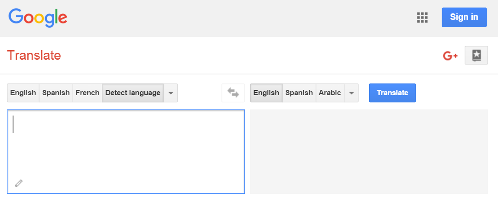
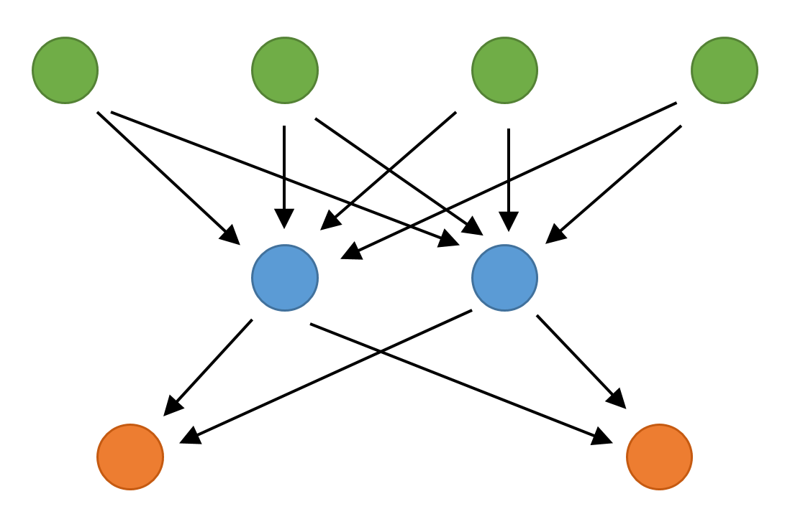
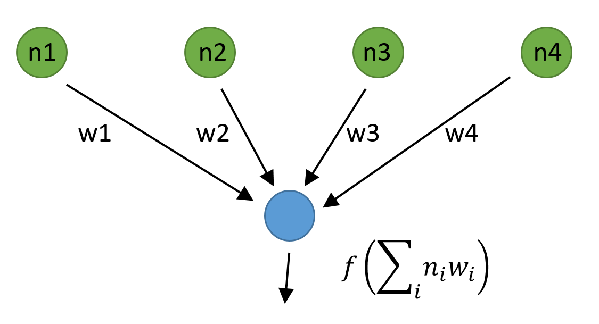
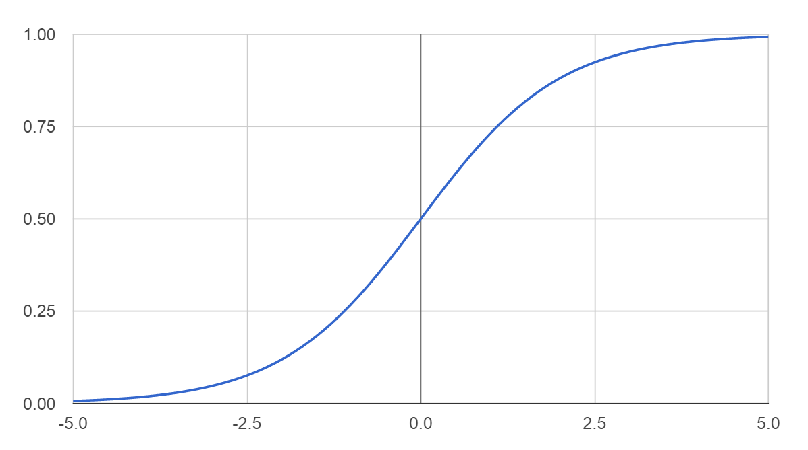
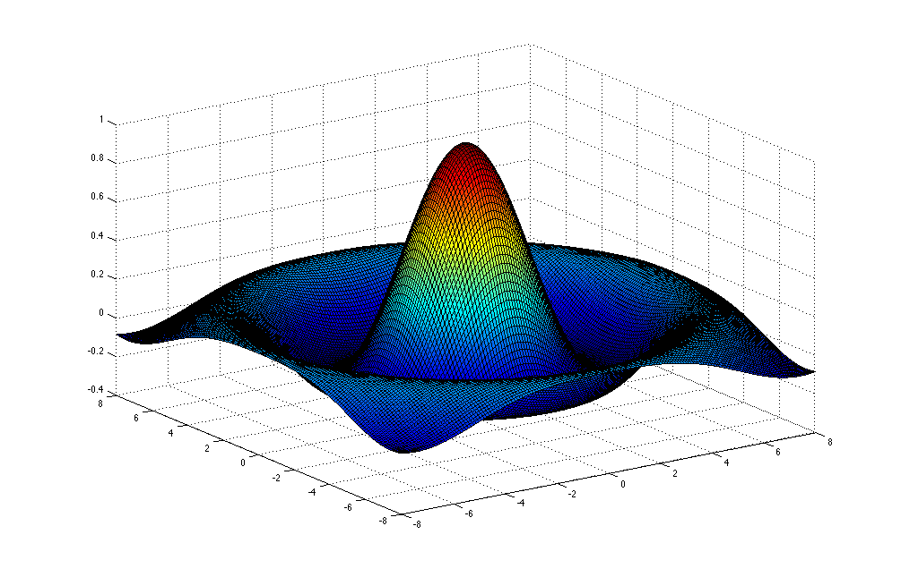

Machine Learning
with Functional Programming and F#
Evelina Gabasova (@evelgab)
F# for Machine Learning
"F# empowers users to tackle complex computing problems with simple, maintainable and robust code."
What this really means
- Can implement complex ML algorithms
- Code is easy to understand
- We can integrate it with .NET
Recognizing languages

Recognizing languagesWhat is the language of this text? A Csillagok haboruja egy uropera filmsorozatnak, irodalmi muveknek es szamitogepes jatekoknak a neve. |
|
 This is Hungarian, of course!
This is Hungarian, of course!What you won't learn
- how to use machine learning frameworks
What you will learn
- how two important machine learning algorithms work
- how to implement them in F#
PART 1
Recognizing languages
using letter pair frequency
[ NEAREST NEIGHBOUR CLASSIFIER ]
The plan
Get sample text from from Wikipedia pages (done)
Calculate features frequencies of letter pairs
Compare languages using their features
- Classify language find the most similar one
STEP 1
Calculating frequencies
Example using sample English text "the three"
|
|
|
STEP 1
Calculating frequencies
Now calculate probabilities of the pairs
|
|
|
STEP 2
Calculating distance between features
th |
e_ |
ee |
el |
|
English |
0.3 |
0.2 |
0.2 |
0.1 |
Portuguese |
0.0 |
0.2 |
0.1 |
0.3 |
Distance is the sum of squares of differences.
STEP 2
Calculating distance between features
th |
e_ |
ee |
el |
|
English |
0.3 |
0.2 |
0.2 |
0.1 |
Portuguese |
0.0 |
0.2 |
0.1 |
0.3 |
Difference |
0.3 |
0.0 |
0.1 |
-0.2 |
Sum of squares: \(0.09+0.0+0.01+0.04 = 0.14\)
STEP 3
Classifying unknown text
English |
Spanish |
Portuguese |
Czech |
|
Unknown text |
0.10 |
0.14 |
0.25 |
0.27 |
PART 1
github.com/evelinag/LanguageRecognizer
PART 2
Recognizing languages
using simple neural net
[ PERCEPTRON ]
[ LOGISTIC REGRESSION ]
How neural networks work
Network with single neuron
Sigmoid function
\(f(x) = \frac{1}{1 + e^{-x}}\)
Learning the weights
Initial weights can be generated randomly
Improve weights using gradient descent
Repeat recursively until certain error or number of steps
Improving using gradient descent

Gradient descent in more dimensions
Conclusions
Learning more
Learning more
- The F# Foundation www.fsharp.org
FsLab Package www.fslab.org
- Accord.NET accord-framework.net
- Diffsharp library diffsharp.github.io/DiffSharp
- Hype library for deep learning hypelib.github.io/Hype
- Vulpes: deep belief networks github.com/fsprojects/Vulpes
Thank you!
 |
@evelgab |
| evelina@evelinag.com | |
 |
github.com/evelinag |
| evelinag.com |